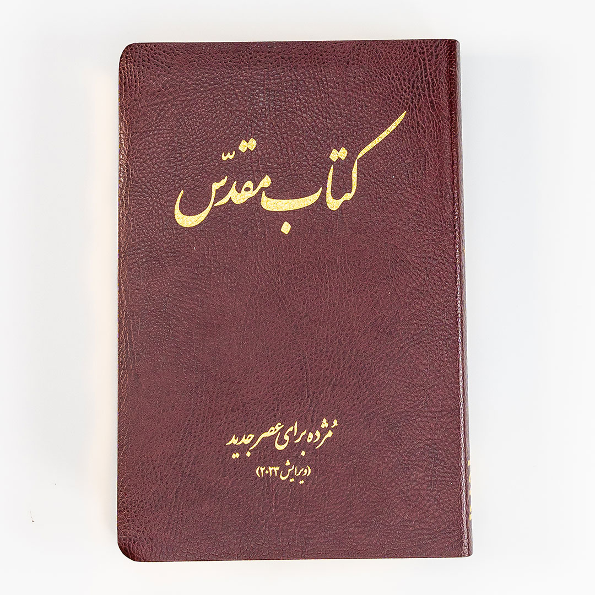

چرا کتاب مقدس را می خوانیم؟
پیرو عیسی شخصی است که:
- معتقد است که عیسی مسیح پسر خداست
- عیسی را به عنوان نجات دهنده پذیرفته است
- تصمیم گرفته است با پیروی از تعالیم عیسی و برنامه او برای زندگی ما زندگی کند.
پیروان عیسی معتقدند که کتاب مقدس پیام خدا برای بشریت است.
آنها میدانند که اگر واقعاً میخواهند خدا را به روش شخصی که برای ما در نظر گرفته است بشناسند، باید کتاب مقدس را بخوانند. برای اینکه پیروان واقعی عیسی باشیم، یعنی افرادی که تصمیم گرفتهاند طبق روشی که او در زمان حضور او در زمین بود زندگی کنند، باید کتاب مقدس را بخوانیم. ما باید بدانیم که چرا معتقدیم عیسی پسر خدا بود، و در مورد وقایعی که منجر شد خدا او را به زمین فرستاد تا نجات دهنده ما باشد.
اگر با خواندن کتاب مقدس بزرگ نشده اید و چیز زیادی (اگر چیزی) در مورد آن نمی دانید، تنها نیستید! این کتاب کوچک قصد دارد به شما کمک کند تا بفهمید کتاب مقدس چه نوع کتابی است:
- چگونه نوشته شد
- چگونه یک داستان یا متن را در کتاب مقدس پیدا کنیم
- -داستان اصلی کتاب مقدس می گوید
وقتی با خواندن کتاب مقدس او را بشناسید، خداوند روح شما را برکت خواهد داد و شما را به شما نزدیکتر خواهد کرد!